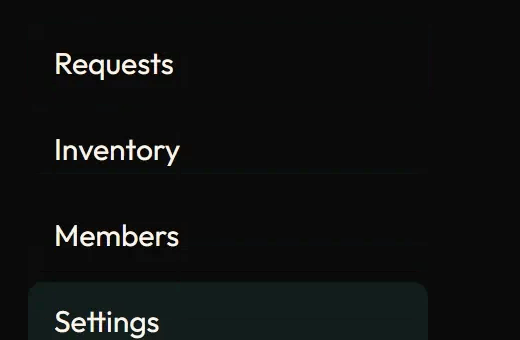
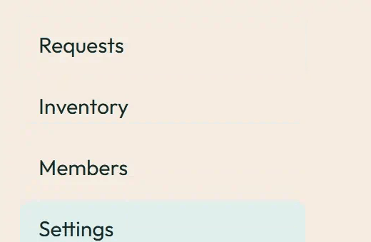

Sidebar and tab indicator
Click a sidebar item or a tab: one box slides, nothing repaints. Under prefers-reduced-motion: reduce the motion is removed and the end state shows at once.
Tabs: use Left/Right, Home and End to select a section.
Overview of the loan record.
Recent loan activity.
Files attached to this record.
Image previews
Static posters are shown first. Play starts an animated image; Pause restores its poster. Reduced motion keeps posters visible.

